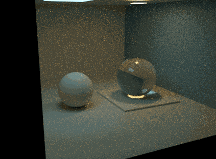
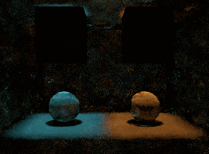

RadianceLab · strategy studies · 15 September 2026
Give each sampler
a reason to exist.
The interesting question is where useful paths are hiding. Near another path? Behind an opening? Around a caustic? Each technique spends its work differently to find them.
Open File → Scene Presets → Technique showcases / paired beauty scenes in the desktop application. Scenes 124–128 load geometry, camera and the intended renderer together. These are focused experiments with the current implementations, not certified performance wins.
Choose how camera and light paths meet.
Mutate paths that already carry energy.
Turn previous observations into future proposals.
Follow the geometry of specular transport.
124 · VCM · connection and merging
A caustic beside ordinary illumination.

Why this scene
The sharp lens concentrates emitted paths onto a small receiver region. Merging can collect nearby light vertices there; connection remains useful for less constrained transport elsewhere.
Try it
Compare connection only → merging only → both. Then reduce the merge radius. Look at the caustic and diffuse sphere separately, including noise, smoothing and cost.
The local VCM implementation weights connection/merging using a nearby-photon density proxy and applies a fixed 0.5 factor to their sum. These are experimental weights, not full path-density MIS. A pleasing combined image does not establish the published VCM estimator's consistency or efficiency. This scene exposes that distinction.
125 · recorded-vector MLT
Find the useful light well. Stay near it.

Independent draws repeatedly forget where the bright paths were. Metropolis sampling can spend additional work near a successful path after finding it. The source is deliberately finite: this camera-path implementation cannot invent a missing delta-light sampling strategy.
Try it
Toggle acceptance/chain diagnostics, then compare large-step probability 0.3 versus 1.0. Count bootstrap time and mutations, not only displayed frames. The all-large-step setting still uses Metropolis weighting; it is an independent-proposal MCMC baseline, not ordinary PT.
The implementation records and perturbs primary random numbers. It should not be described as the complete original path-space mutation algorithm.
126 · lazy PSSMLT
Discover both islands of light.

Lazy primary samples support variable-length random-number streams without eagerly modifying every coordinate. They are a different implementation of mutation sampling, not a promise of a different transport capability.
Try it
Compare large-step probabilities 0.1, 0.3 and 0.6, restarting each run. Small steps refine discoveries; large steps explore elsewhere. Check both colours: high acceptance while one region stays dark is a chain-mixing problem.
Load this same scene in recorded-vector MLT for the implementation comparison. Different images and startup budgets cannot establish that one variant is intrinsically faster.
127 · directional path-guiding prototype
Learn where the doorway is.

Local material sampling knows the BSDF, but not which directions lead to illumination elsewhere. A learned directional distribution adds that information.
Try it
Enable Show field after the training passes. Compare guiding strength 0 versus 0.5, resetting between runs. Inspect where the arrows concentrate, and include training cost before judging performance.
Audit finding: the guided branch uses a mixture denominator, but the cosine branch does not evaluate that same mixture. The sampling distribution also needs a solid-angle audit. Current images demonstrate learning behavior; they cannot support an unbiased variance-reduction claim. PDF repair is a prerequisite to a fair benchmark.
128 · specular-chain development fixture
A glass relay is a constraint problem.

True manifold methods move a path while enforcing reflection/refraction constraints. That can address specular transport which arbitrary vertex connections almost never satisfy.
What works here
The current mode records specular chains and perturbs the primary samples more gently at specular bounces. Enable chain and mutation visualization to inspect accepted proposals.
There is no Newton constraint solve in this implementation. The Newton controls are inactive, and recorded Newton steps remain zero. A new scene cannot supply the missing algorithm: this is a useful fixture for developing it, not a showcase of proven manifold acceleration.
Complementary ideas, different costs
Photon primitives do not make these methods obsolete.
PP chooses geometric supports and parameterizations for particular path families. VCM decides how subpaths meet; MLT decides which successful samples to revisit; guiding learns proposals; manifold techniques enforce specular constraints. These ideas can combine. Their names do not form a ranking from old to upgraded.
Our strongest PP scenes deliberately favour their supported transport. A specialised estimator can win there while a more general method covers other paths more naturally. Heavy primitive construction also has little justification on easy paths already sampled efficiently by NEE.
Missing transport in a particular PM configuration is likewise an implementation/strategy-coverage issue, not a general property of photon mapping.
UPBP is not the only medium-capable renderer here: volume PT, cached VPM and supported PP families also handle media. The local UPBP mode implements a bounded subset; the published method and the current implementation should remain separate claims.
| Idea | Potential payoff | Cost to include |
|---|---|---|
| VCM | Diffuse transport and caustics in one scene | Light paths, visibility rays, neighbour search and kernel error |
| MLT / PSSMLT | Repeated use of rare high-contribution paths | Bootstrap, rejected proposals and correlated samples |
| Guiding | Useful directions beyond the local BSDF | Training, field memory and PDF evaluation |
| Manifold methods | Specular constraints instead of accidental hits | Constraint solves, multiple roots and probability accounting |
| Photon primitives | Integrate or sample a structured family efficiently | Construction, intersections, Jacobians, support and visibility |
Judge the benefit at equal work.
These captures validate scene loading and show actual renderer output. They are not equal-time error benchmarks. To claim a win, freeze the camera, source power, bounce budget and display exposure; retain a converged reference; measure error versus elapsed time across multiple independent runs. Include setup/training and report each important image region separately.
All five implementations run their transport on the CPU here. Comparing their frame rates with a specialised GPU mode mixes algorithm quality with implementation maturity and hardware execution. Conversely, CPU execution alone does not explain wrong energy or missing transport.
Observed in these runs: local mutations reveal coherent illuminated surfaces where all-large-step proposals still produce isolated splats. This is evidence of useful sample reuse, not proof of lower unbiased error. VCM's current combined weights have not established an efficiency advantage. Guiding's brightness comparison remains affected by the PDF issue described above.
The selectors show 256 native passes at 423 × 312 pixels. Each scene uses one fixed exposure for all its variants; no per-image brightness matching is applied. Direct lighting remains enabled in both VCM component views. MLT/PSSMLT passes have different meanings from path-tracing samples per pixel.
Capture provenance and reproducible settings
Release build; hidden native windows; source geometry and transport unchanged between each scene’s variants. Timings below include launch and startup and are not renderer FPS. Bootstrap randomness is not locked; these are single runs, not a statistical benchmark.
| Scene / variant | Launch to film | Mean linear RGB | Film SHA-256 |
|---|---|---|---|
| 124 / default | 98.1 s | 0.07971, 0.08482, 0.06070 | 6b57083bc3cbc572… |
| 125 / default | 13.3 s | 0.00488, 0.00156, 0.00024 | 1007cc9409ab1b5e… |
| 126 / default | 13.3 s | 0.01764, 0.01446, 0.01111 | b4a1d0d653ef0c99… |
| 127 / default | 43.5 s | 0.11018, 0.06570, 0.01992 | 804f5b6a400b3038… |
| 128 / default | 13.3 s | 0.12129, 0.28490, 0.28718 | 993dedc25d942bde… |
| 124 / connection | 61.8 s | 0.07943, 0.08448, 0.06047 | 3767748de572b95a… |
| 124 / merging | 75.8 s | 0.08701, 0.09252, 0.06524 | aaa99c04dee8a7f1… |
| 125 / independent | 13.5 s | 0.00328, 0.00104, 0.00016 | 5da8e1f8dca125aa… |
| 126 / independent | 13.3 s | 0.03379, 0.02913, 0.02284 | de9517a19dff2988… |
| 127 / unguided | 33.8 s | 0.08186, 0.04786, 0.01425 | c225068509ddecb1… |
Binary SHA-256: f56f9bf0ad5acb9f838913d803fb0c7c21791ee33ce0af2c17eb898501f3980e.
Run the capture helper from the local RadianceLab directory. Select one scene and variant per fresh output directory:
python docs/showcases/render_showcases.py .work/new-capture --scenes 124 --variant connection --samples 256 --resolution-scale 1 --window-width 1360 --window-height 900 --timeout 240 --binary build-local/bin/Release/Prism.exeVariants: default; connection/merging for VCM; independent for MLT/PSSMLT; unguided for path guiding. The helper preserves float films, settings and hashes in its output directory.
Where these ideas come from
Implementing Vertex Connection and Merging describes connection/merging probability accounting. PBRT's Metropolis Light Transport chapter explains primary samples, bootstrap and mutation weighting. Jakob and Marschner: Manifold Exploration describes the constraint-aware method that our prototype does not yet implement. The authors’ Practical Path Guiding implementation is a useful reference for a mature learned proposal, rather than treating our histogram prototype as equivalent.
Prisms and repeated images
Four optical scenes: inside glass, a mirror room, and a white-beam prism bench with or without mist.